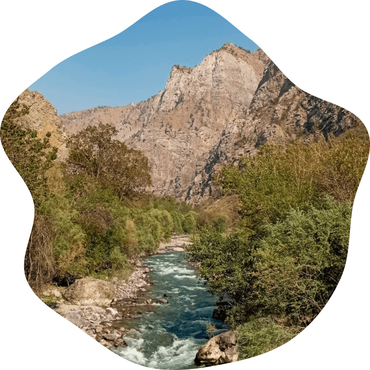
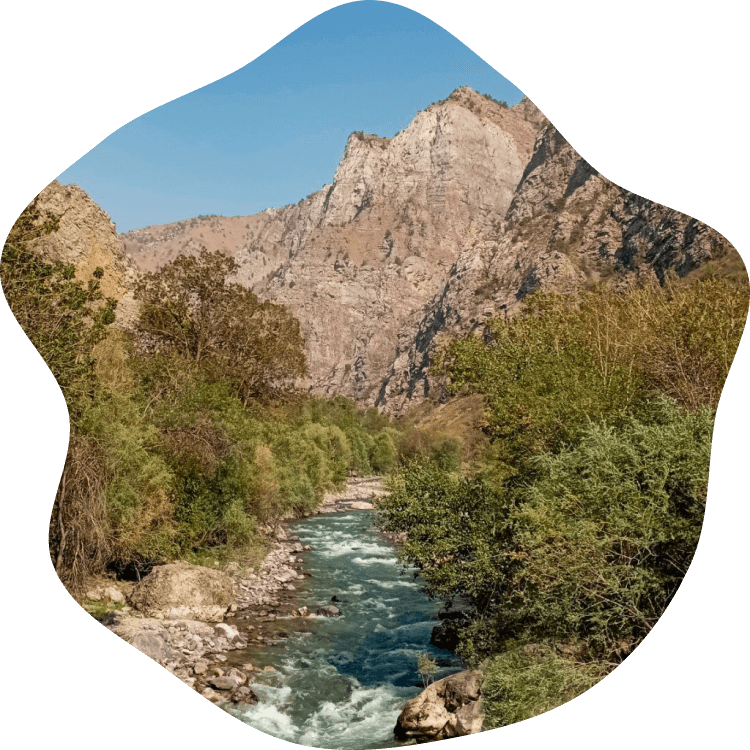
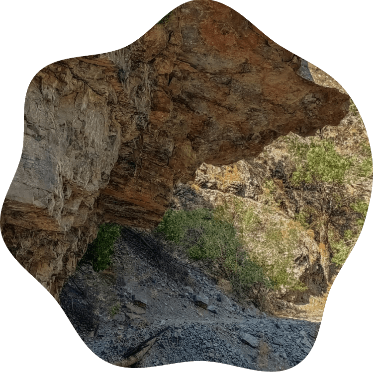
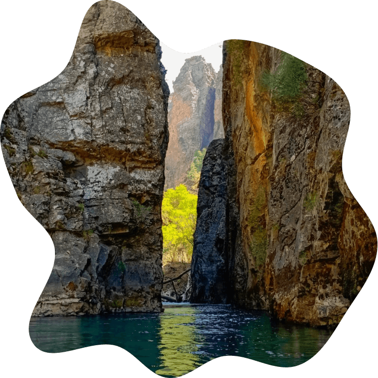

Коксу – живописнейшая горная река наполняющая своими ледяными «голубыми водами» Чарвакское водохранилище, берущая свое начало и простирающаяся вглубь Пскемского хребта на 60км!

Коксу – живописнейшая горная река наполняющая своими ледяными «голубыми водами» Чарвакское водохранилище, берущая свое начало и простирающаяся вглубь Пскемского хребта на 60км!
Узкая тропа, петляющая вдоль северной стороны реки, часто то набирая, то сбрасывая высоту – нередко удивляет своими внеземными каменистыми пейзажами и уютными берёзовыми рощами
Каждый отдыхающий здесь, всегда найдет занятие себе по душе – будь то рыбалка на здешнюю форель или покорение бурлящих потоков реки, так манящих своей ледяной и кристально чистой водой!
Щель – так называемое узкое место между двумя скалами, сквозь которое протекает река Коксу. На входе в неё вода достаточно бурная, но далее учитывая большую глубину, гладь воды становится ровной и спокойной.
По обеим сторонам расщелины расположились непреступные вертикально отвесные скалы, достигающие до 30 метров в высоту. Прозванные в народе “Прыжком тигра” они завораживают своей красотой и величием.
А у самого выхода из щели образуется небольшой залив на берегу которого можно отлично отдохнуть – искупаться в обжигающей ледяной горной воде, испытать свою удачу в рыбалке и приготовить пищу на костре!
Путь к щели проходит вдоль узкой горной тропы, петляющей то вверх(30-50м над уровнем реки), то вниз к самой реке и составляет 18-19км от пропускного пункта. Вода в реке чистейшая и отлично подходит для питья.

Ещё больше сочных фотографий и ярких моментов смотри в нашем фотоотчете!
Да, паспорт обязателен, т.к. эта территория является приграничной зоной.
Также на пропускном пункте взимается плата в размере 15000 сум на одного человека за каждые сутки.
Желательно не менее 3-х дней:
В первый можно дойти и разбить лагерь в роще на Замбат-сае(14.5 - 15км от пропускного пункта)
Во второй день на легке дойти и отдохнуть непосредственно на щели(3.5 - 4км от лагеря), также посетить водопад чуть выше по течению(1 - 1.5км от щели)
На третий день отправиться в обратный путь от лагеря
Так как ночи здесь очень холодные, рекомендуем к посещению в июле - августе.
Головной убор (желательно панама), также большой рюкзак для вещей, палатки, каримата и пищи.
Практически на протяжении всего пути имеются спуски к реке с безопасной и чистой горной водой.
Не столь экстримален, сколько изнурителен.
Рекомендуется подросткам от 14 лет.